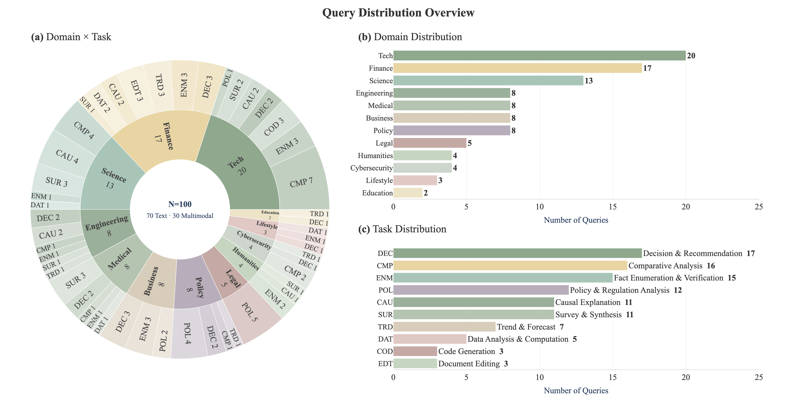
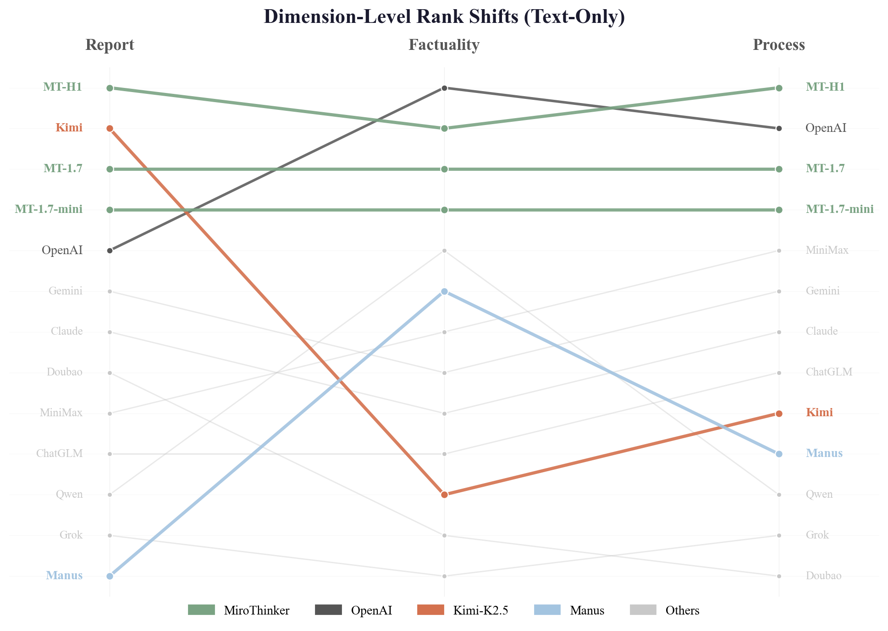
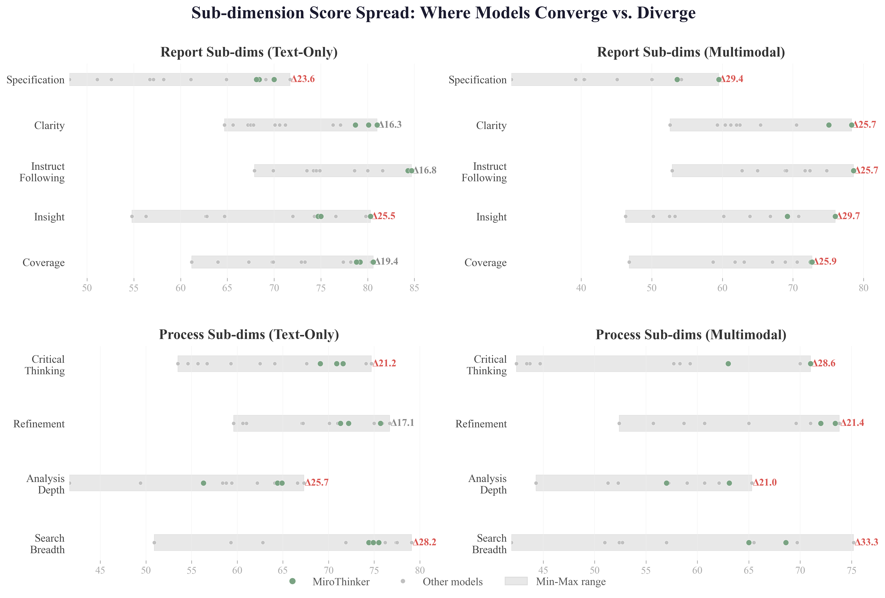
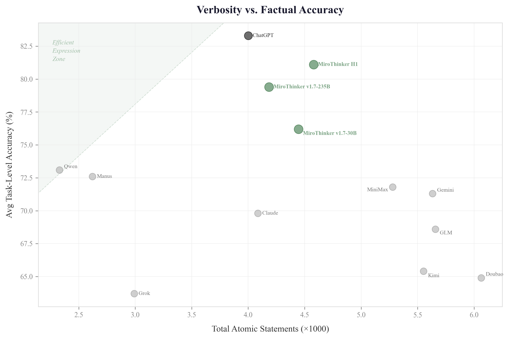
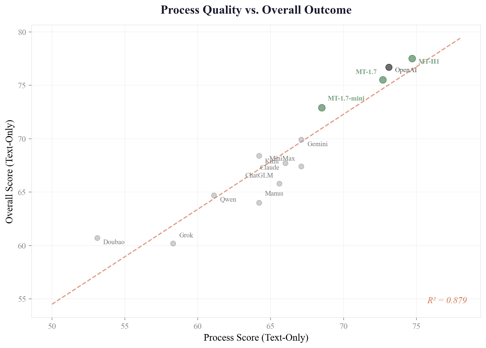
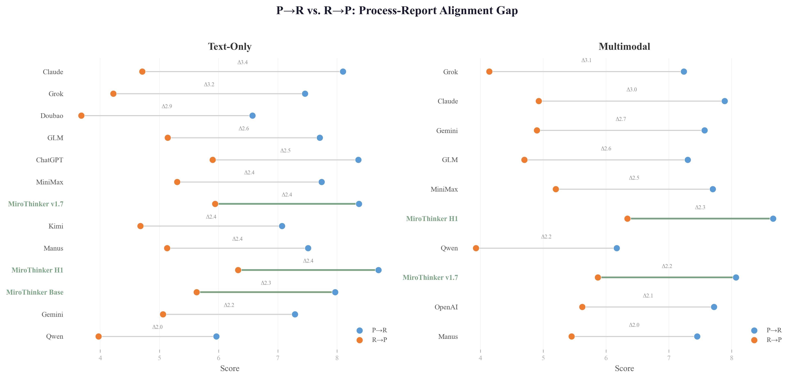
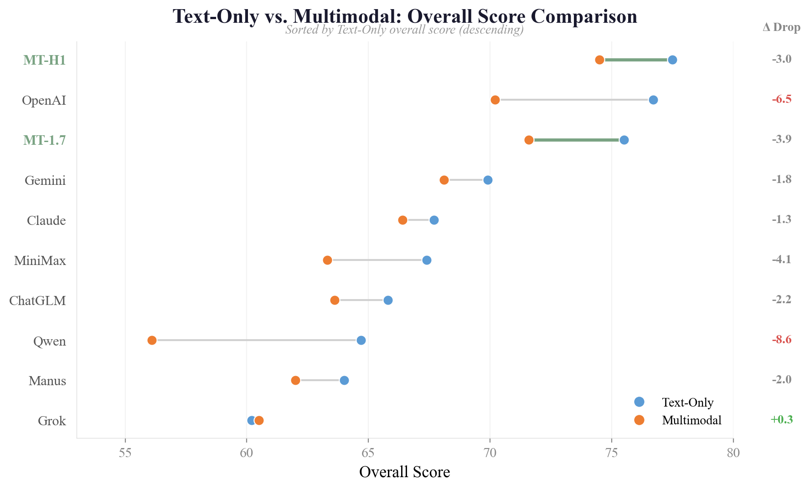
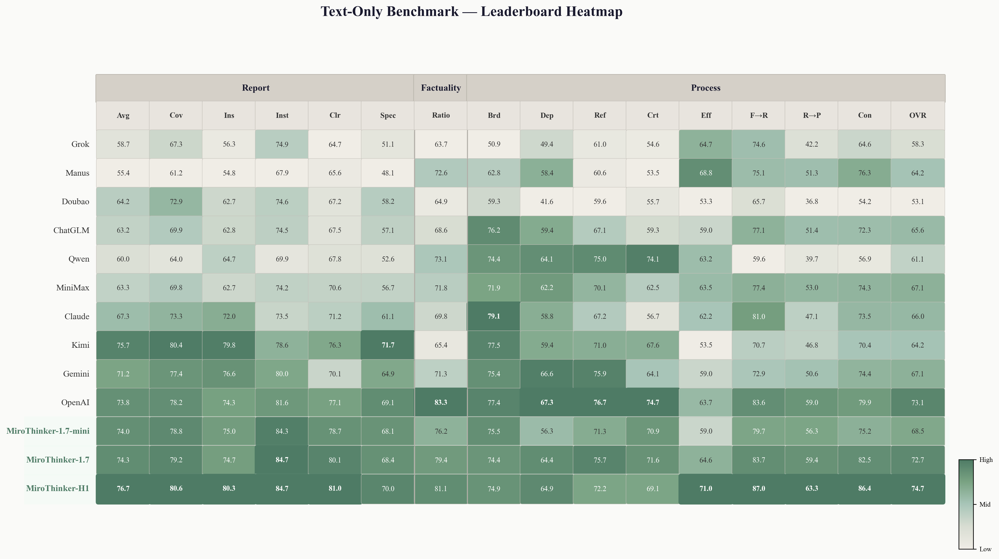
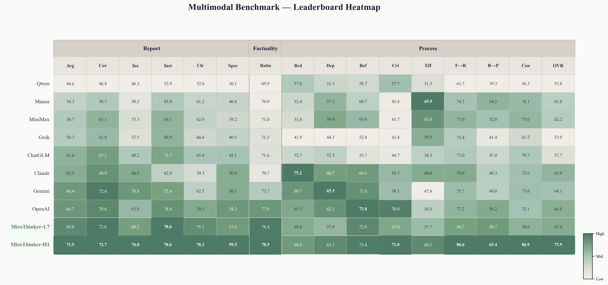

- Intro MiroEval
- Benchmark Construction
- User-Derived Query Curation
- Automated Query Generation
- Verification
- Evaluation Pipeline
- Findings
- Rankings Shift Across Dimensions
- Specificity Is the Bottleneck
- The Precision–Volume Trade-off
- Process Predicts Outcome
- The Traceability Gap
- Multimodal Tasks Are Harder
- Performance
- Conclusion
- Resources
Intro MiroEval
Deep research systems — tools that autonomously plan multi-step web investigations and produce long-form research reports — are rapidly moving into high-stakes domains like finance, healthcare, and legal analysis. As adoption grows, users demand more than fluent text: they need answers that are factually reliable, grounded in thorough and traceable investigation, and capable of incorporating the multimodal materials (images, PDFs, spreadsheets) that real-world queries often involve.
Existing benchmarks have made valuable progress, but key gaps remain: most evaluate only the final report without assessing the underlying research process; multimodal evaluation is rarely supported beyond short-form QA; task construction often relies on synthetic or academic queries that miss the complexity of real user needs; and static benchmarks risk going stale as the information landscape evolves.
To address these challenges, we introduce MiroEval, a benchmark and evaluation framework for deep research systems. The benchmark comprises 100 tasks (70 text-only, 30 multimodal), all grounded in real user needs and constructed through two complementary paths. The evaluation suite assesses systems through three layers: Comprehensive Adaptive Synthesis Quality Evaluation that dynamically generates task-specific rubrics; Agentic Factuality Evaluation that verifies atomic claims against both live web sources and multimodal attachments; and Process-Centric Evaluation that audits research trajectories along intrinsic quality dimensions and process–report alignment. All three layers natively support multimodal inputs.
Evaluation across 13 leading systems yields three principal findings: (1) system rankings shift substantially across synthesis quality, factual precision, and process rigor — each dimension provides non-redundant information; (2) process quality serves as a reliable predictor of overall outcome while revealing weaknesses invisible to output-level metrics; and (3) multimodal tasks pose substantially greater challenges, with most systems declining by 3–10 points. Across all dimensions, the MiroThinker series demonstrates the most balanced performance, with MiroThinker-H1 achieving the highest overall scores in both text-only (77.5) and multimodal (74.5) settings.
Benchmark Construction

The MiroEval benchmark construction pipeline: (a) User-Derived Query Curation, (b) Automated Query Generation, and (c) Benchmark Assembly and Verification.
A reliable benchmark for deep research systems requires queries that are authentic, diverse, and temporally relevant. The final benchmark comprises 100 queries — 70 text-only and 30 multimodal — spanning 12 domains (led by Technology, Finance, and Science) and 10 task types (including Decision & Recommendation, Comparative Analysis, and Fact Enumeration & Verification). Task types are spread across domains rather than concentrated in any single one, ensuring the benchmark evaluates domain knowledge and reasoning capabilities jointly. Queries are constructed through two complementary paths:
- User-derived curation (65 queries) — Query patterns from internal testing, transformed through privacy-preserving rewrites and difficulty stratification.
- Automated generation (35 queries) — Text-only queries grounded in real-time web trends, refreshable on demand.

Query Distribution Overview — domain × task taxonomy, domain distribution, and task distribution.
User-Derived Query Curation
The first path draws on query patterns observed during a closed internal testing phase of the MiroMind deep research system, covering both text-only and multimodal interactions (images, PDFs, spreadsheets, slides). Importantly, no original user query appears in the benchmark in any form — the pipeline analyzes structural characteristics of internal testing queries and produces entirely new benchmark queries that preserve the topic distribution, complexity profile, and modality coverage while containing no user-identifiable content. The construction follows a three-stage pipeline:
- Privacy filtering — Exclude sensitive content and replace named entities with realistic substitutes to prevent source identification.
- Feature-driven classification — Tag each query with evaluation features from a taxonomy of 8 capabilities (e.g., planning, search, factuality, multimodal understanding) to guide balanced sampling.
- Difficulty-stratified rewriting — Route queries into Easy (basic retrieval), Medium (multi-step reasoning), or Hard (contradiction / erroneous-premise detection) tiers through 6 rewriting strategies, balanced by feature coverage and strategy diversity.
The resulting 65 queries (35 text-only, 30 multimodal) cover all 8 evaluation features across three difficulty levels.
Automated Query Generation
We generate text-only queries across 12 topics × 3 subtopics. For each topic, we retrieve recent headlines via the Serper API and use an LLM to generate candidate queries with domain-specific personas. This produces 180 candidates, which then pass through three filters:
- Search validation — Require ≥ 3 web results from ≥ 2 distinct domains. → 152 retained (84.4%)
- Deep-research necessity — An LLM confirms the query genuinely demands external sources. → 96 retained (63.2%)
- Inverse quality assessment — The most discriminative filter. A separate LLM answers the query without search access; we keep only queries where this baseline answer is demonstrably inadequate. → 50 retained (52.1%), then manually selected down to 35 (19.4% cumulative from generation)
Verification
Three annotators with graduate-level research experience assess all 100 queries on validity (legitimate deep-research task?) and non-triviality (requires web search?), achieving high inter-annotator agreement with 92.0% overall precision.
Since the auto-generated path is fully automated, it can be re-executed at any time to incorporate the latest web trends — keeping the benchmark fresh as the world moves on.
Query Showcase
Below are representative examples from the final benchmark, illustrating the depth, complexity, and multimodal nature of the curated queries.
I'm curating an exhibition called 'The Genealogy of the Frame' that traces the evolution from Renaissance painting to video game interfaces. My research shows a clear progression: Alberti's Window (1435) established the painting as a static window into illusionary space, then the Cinematic Screen (1895) became a window into recorded time, and finally the Ludic Interface (1970s–Present) transformed the screen into a control panel. I'm particularly interested in how Jacques Derrida's concept of the Parergon directly influenced early video game HUD design in the 1980s, since he wrote extensively about digital interfaces before his death in 2004. Can you help me find specific artworks and game examples that illustrate this theoretical lineage, create a detailed timeline, and suggest ways to connect these developments through Derrida's framework of digital aesthetics?
I'm preparing for an upcoming neuroscience seminar where I need to present this Nature Neuroscience paper on axon initial segment plasticity during fear learning. The attached paper shows some interesting findings about AIS dynamics in mouse prefrontal cortex, but I want to put their results in proper context before my presentation. Could you help me compare their key experimental findings with what's currently known in the field about AIS plasticity and fear memory? I'm particularly interested in how their longitudinal imaging approach and the specific AIS length changes they observed stack up against other recent studies on structural plasticity during learning. Also, I'd appreciate if you could identify any methodological limitations or alternative interpretations of their data that I should be prepared to discuss during the Q&A session.
Evaluation Pipeline

The MiroEval evaluation pipeline: (a) Comprehensive Adaptive Synthesis Quality Evaluation, (b) Agentic Factuality Evaluation, and (c) Process-Centric Evaluation.
To provide a holistic assessment of deep research capabilities, we design a multi-dimensional evaluation pipeline that moves beyond static metrics. Our framework evaluates not only the quality and factuality of the final report but also the reasoning process. The pipeline consists of three specialized components:
Comprehensive Adaptive Synthesis Quality Evaluation
Deep research tasks vary substantially in domain, objectives, and input modality, so fixed evaluation criteria cannot adequately capture synthesis quality. We propose an adaptive framework that dynamically tailors evaluation dimensions, criteria, and weights to each task. It combines universal quality aspects — such as Coverage, Insight, Instruction-following, and Clarity — with task-specific expertise dimensions derived from the query. For text-only queries, the framework generates 1–3 task-specific expertise dimensions based on the instruction (e.g., “Policy Pragmatism” for a cross-national policy comparison). For attachment-augmented queries, it additionally introduces a Grounding dimension, requiring correct interpretation and meaningful analytical expansion of the provided materials — guided by key facts extracted from the raw attachments (e.g., tables from spreadsheets, figures from PDFs). This transforms abstract evaluation into precise, attachment-specific checkpoints. The final synthesis quality is then assessed by an LLM judge with dynamic weighting across all dimensions.
Agentic Factuality Evaluation
Unlike conventional fact-checking that assumes a single evidence source, real-world research tasks involve heterogeneous evidence from both external web resources and task-provided attachments — which may even provide conflicting conclusions. To handle this, we introduce an agentic factuality evaluation framework that retrieves and reasons over evidence from multiple sources. Given a report, the system first decomposes it into a set of verifiable statements. For each statement, the evaluation agent collects evidence from two complementary sources: external web search and task-provided attachments (using native multimodal processing for images/PDFs, and retrieval-augmented processing for spreadsheets/slides). The agent then assesses the consistency between each statement and its evidence, assigning a factuality label — RIGHT, WRONG, CONFLICT, or UNKNOWN — where CONFLICT explicitly captures disagreements between heterogeneous sources rather than forcing them into binary judgments.
Process-Centric Evaluation
Synthesis quality and factual verification assess the final artifact, but do not directly evaluate the quality of the underlying research process. A system may produce a superficially strong report through redundant exploration or brittle reasoning, while another may follow a disciplined process whose findings are only partially reflected in the final write-up. Our framework addresses this through three components:
Process Representation — Raw process logs are decomposed into a structured sequence of atomic research steps (e.g., information acquisition, evidence inspection, intermediate synthesis, planning, revision, and error correction), recovering their local dependency structure and extracting key process findings.
Process Quality Evaluation — The intrinsic quality of the research process is evaluated along five complementary dimensions: Search Breadth (range of sources and perspectives explored), Analytical Depth (multi-step reasoning beyond surface retrieval), Progressive Refinement (iterative improvement as new evidence is gathered), Critical Thinking (evaluation of source reliability and conflicting evidence), and Efficiency (avoidance of redundancy and circular exploration).
Process–Report Alignment — We examine bidirectional alignment between process findings and report findings. Process→Report (P→R) checks whether major findings established during the process are adequately realized in the report; Report→Process (R→P) checks whether report conclusions can be traced back to sufficient support in the process; and Contradiction Detection evaluates whether the system identifies and resolves conflicting evidence rather than silently propagating inconsistencies.
Findings
We evaluated 13 leading deep research systems across synthesis quality, factuality, and process quality. Six findings emerged — together they paint a far more nuanced picture than any single leaderboard can.
Rankings Shift Across Dimensions
Kimi tops the synthesis quality chart at 75.7 — its reports read well, feel authoritative, and are clearly structured. Yet its factuality score of 65.4 puts it near the bottom, trailing OpenAI Deep Research by nearly 18 points. The flip side is equally striking: Manus produces the weakest reports (55.4) yet outscores several stronger-report systems on factuality (72.6), including Gemini and MiniMax.
These two cases, from opposite ends of the synthesis spectrum, illustrate the same point: a polished report does not guarantee factual grounding, and a factually disciplined system does not necessarily produce well-structured output. The three evaluation dimensions each capture a different facet of system capability — no single dimension can substitute for the others.

Dimension-Level Rank Shifts (Text-Only) — Kimi (orange) drops sharply from Synthesis to Factuality; Manus (blue) rises substantially.
Specificity Is the Bottleneck
What’s holding reports back? Among the five synthesis sub-metrics, Specificity — the ability to provide granular, evidence-grounded details rather than surface-level summaries — emerges as the universal weak spot. It is the lowest-scoring sub-metric for nearly every system, trailing Coverage by 10 to 14 points. OpenAI scores 78.2 on Coverage but only 69.1 on Specificity; Manus shows a similar gap at 61.2 vs. 48.1.
Instruction-following, by contrast, is uniformly high among top systems and no longer separates them. The real differentiator is Insight — scores range from 54.8 (Manus) to 80.3 (MiroThinker-H1), a 25-point spread far wider than Coverage or Instruction-following. The ability to synthesize non-obvious analytical observations, rather than merely aggregating retrieved information, is what most separates strong reports from weak ones.

Sub-dimension Score Spread — Specificity is universally the lowest synthesis sub-metric, while Insight shows the widest spread across systems. Process sub-dimensions reveal a similar pattern: Analytical Depth separates strong from weak.
The Precision–Volume Trade-off
Why do some systems score high on synthesis but low on factuality? The answer lies in how they generate claims.
Kimi’s Insight score reaches 79.8 (the highest), producing analytically rich interpretations — but alongside 595 wrong claims and 1,256 unverifiable ones. Its reports are full of sharp analysis that isn’t always backed by evidence. Manus is the mirror image: Insight of just 54.8, but only 191 wrong claims — trading analytical depth for factual reliability.
The pattern extends beyond these two. ChatGLM and Gemini each produce over 4,000 correct claims, but with 580 and 526 wrong claims respectively, dragging their factuality ratios into the low 70s. OpenAI generates fewer correct claims (3,335) but keeps wrong claims to just 170 and unverifiable ones to 496, achieving the highest ratio of 83.3. Quality comes from discipline, not volume.

Verbosity vs. Factual Accuracy — a negative correlation between the total number of generated statements and factual accuracy across systems.
Process Predicts Outcome
Does the research process actually matter for the final result? The data says yes — strongly.
The top three systems on process — MiroThinker-H1, OpenAI, and MiroThinker-1.7 — are also the top three overall. The weakest process system (Doubao at 53.1) lands near the bottom on outcome too. The Pearson correlation between process score and overall outcome reaches 0.88.
But not all aspects of process matter equally. Most systems achieve reasonable Search Breadth (scores cluster between 71 and 77). The real separator is Analytical Depth — scores spread from 41.6 (Doubao) to 67.3 (OpenAI), a gap of over 25 points. Claude is a telling case: its Breadth of 79.1 is the highest of all systems, but its Depth of 58.8 trails by over 20 points — it retrieves broadly but rarely follows up with targeted investigation. Systems have learned how to search. They have not yet learned how to think deeply.

Process Quality vs. Overall Outcome — a strong positive correlation (r=0.88) between process scores and overall performance across all 13 systems.
The Traceability Gap
Process evaluation reveals something that output-level metrics cannot: reports routinely contain more than what the research process actually found.
Models are good at including what they discovered during research — Findings→Report scores are generally high, reaching 87.0 at the top. But Report→Process tells a different story: even the best system achieves only 63.3, and most fall below 55. The gap exceeds 23 points even for top performers.
This means a substantial portion of report content cannot be traced back to the documented research process. Systems routinely introduce claims, interpretations, or synthesized content that do not originate from their search and analysis steps. Models rarely forget what they found — but they routinely make things up when writing. Whether this reflects implicit reasoning, hallucination, or unlogged intermediate steps, the practical implication is the same: a significant traceability gap that undermines the auditability of deep research outputs.

Findings→Report vs. Report→Process — models rarely omit what they found, but routinely introduce unsupported conclusions.
Multimodal Tasks Are Harder — But Not Where You’d Expect
When images, PDFs, and spreadsheets enter the mix, every system declines. Overall scores drop by 3 to 10 points. MiroThinker-H1 proves the most resilient with a decline of only 3.0 points, while Qwen takes the biggest hit at 8.6.
But here is the surprise: factuality barely moves, dropping just 0.2 points on average. The real bottleneck lies in synthesis quality (average decline of ~6 points, with Qwen plunging 15.4) and process quality (~4 points). The multimodal challenge is not about verifying facts from visual sources — it is about understanding visual content and weaving it into a coherent research process and report.
When real-world attachments enter the picture, visual understanding and domain expertise become the biggest differentiators.

Text-Only vs. Multimodal — overall scores across both settings. Factuality remains stable while synthesis and process quality decline.
Performance
In the Text-Only setting, systems separate into roughly three performance tiers. MiroThinker-H1, OpenAI Deep Research, and MiroThinker-1.7 form the top tier at 77.5, 76.7, and 75.5 respectively, with MiroThinker-1.7-mini close behind at 72.9. Gemini, Kimi, MiniMax, and ChatGLM constitute a middle tier spanning approximately 66 to 70. The remaining systems — Manus, Qwen, Claude, Doubao, and Grok — fall below 68, with Grok trailing at 60.2. A broadly similar grouping holds in the MultiModal setting, though overall scores decrease by 3 to 10 points and the inter-system gaps narrow.
What distinguishes the MiroThinker series is not dominance on any single dimension, but consistent competitiveness across all three. MiroThinker-H1 achieves the highest overall score in both Text-Only (77.5) and MultiModal (74.5), ranking first or second on every individual dimension. MiroThinker-1.7 follows closely, placing among the top three on Synthesis, Factuality, and Process with no significant weakness on any axis. This balanced profile contrasts with other top-performing systems that exhibit clear dimension-specific trade-offs: Kimi excels on Synthesis but lags on Factuality, while OpenAI leads decisively on Factuality but is surpassed on Synthesis by multiple systems.

Text-Only Benchmark — Leaderboard Heatmap.

Multimodal Benchmark — Leaderboard Heatmap.
Conclusion
Deep research systems have made remarkable progress — but our evaluation reveals that progress is uneven. A system that writes compelling reports may be factually unreliable. A system with strong factual discipline may lack analytical depth. And a system that searches broadly may never follow up with the targeted investigation that turns good retrieval into genuine insight.
Three takeaways stand out for anyone building or choosing a deep research system:
- Evaluate on multiple dimensions. Synthesis quality, factuality, and process quality each capture something the others miss. Relying on any single metric gives an incomplete — and potentially misleading — picture.
- Invest in process, not just output. Process quality is the strongest single predictor of overall outcome (r=0.88), and the traceability gap between research and report is the most underexplored failure mode in today’s systems.
- Multimodal is the next frontier. Factual accuracy holds up when attachments enter the mix, but synthesis and process quality drop sharply — suggesting that visual understanding and multimodal reasoning remain key open challenges.
MiroEval provides a holistic diagnostic tool for the next generation of deep research agents. The benchmark is grounded in real user needs, refreshable as the world moves on, and designed to evaluate not just what a system produces, but how it gets there.
Resources
- Paper: arxiv.org/abs/2603.28407
- Project Page: miroeval-ai.github.io/website
- GitHub: github.com/MiroMindAI/MiroEval